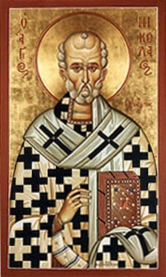

An Introduction to
St. Nicholas: The Christian Alternative to Santa Claus
St. Nicholas would probably never be asked to “give
his testimony” at a revival meeting. There had been no dramatic conversion in
his life when he “met Christ.” Rather than a salvation from a life of sin and
shame like St. Augustine, Nicholas grew in a life of grace from the moment of
his birth. In fact, it is said that St. Nicholas’ sense of God began right at
his birth and that he had stood up immediately after birth to thank God for a
safe delivery!
As he was growing up, with the love of God, he
provided the dowries for three young girls, thus saving them from a proposed
life of prostitution. When the girls’ father found that Nicholas was the
generous benefactor who had saved them from ruin, Nicholas disclaimed credit for
the act and ascribed it to God’s generosity.
He restored many to health. On the day he was made
bishop, a woman brought him a child who had fallen into a fire and had been
badly burned. Nicholas made the sign of the cross over the child and
immediately restored it to health. He saved another infant from certain death
in boiling water.
He calmed storms at sea and saved the sailors from
shipwreck each time, restoring the dead to life as the Lord Jesus had instructed.
Through the power of God, Nicholas took a crippled
woman and made her strong, well and walking free. He changed the spirit of a
mean-hearted miser and made him the Christmas benefactor in the city, long
before Charles Dickens wrote A Christmas
Carol.
He protected the innocent from thieves and a boy from drowning. He restored a strangled boy from death, put Mohammed in his place, and saved kidnapped children from pirates or pagans. In one story alone, he saved six men from the sentence of death.
Nicholas was a zealous and ardent warrior of the
Church. Fighting evil spirits, he made the rounds of the pagan temples and
shrines in the city of Myra and its surroundings. He shattered the idols,
routed the demons and destroyed the temples. When a boatload of pilgrims was in
danger of death, he exposed the demons’ plot and saved the pilgrims.
During a period of famine, Nicholas saved his people
from starvation and three young students from death at the hands of a butcher.
And these are just a few of the stories!
Stories of his calming
raging seas, saving sailors and resurrecting crewmen and children are many. All
of the stories, however, point to the kindness of this child of God, a kindness
that resulted in his giving gifts and offering care, especially to children.
When Nicholas was declared a Saint, he gained a great following simply because
he had been kind and approachable during his life.
The hymn of the Feast of St. Nicholas touches on
some of his spiritual qualities:
“The truth of your deeds has set you before your
flock as a standard of faith, an example of meekness and a teacher of
self-control. Thus you acquired greatness through humility and spiritual wealth
through poverty. O Father and Hierarch Nicholas, intercede with Christ, our
God, that He may save our souls.” (Dismissal
Hymn, Feast of St. Nicholas)
St. Simeon Metaphrastes wrote that St. Nicholas was
respected and loved by all. As people observed his goodness, many followed his
example and teachings. They scorned a material, transient existence
and placed their trust in Jesus Christ.
Children love and honor St. Nicholas because they
conceive of him as a guardian angel, not only looking after their safety and
well-being, but bringing them substantial rewards as well. Many stories led
children to feel the warmest gratitude toward him and at the same time to look
to him as a semi-divine protector in time of trouble.
It’s not at all surprising, then, that since the
ninth century in the East and the eleventh century in the West, St. Nicholas
has been one of the most popular Saints of Christendom: a patron of countries, provinces,
dioceses and cities; the Saint of sailors, children, merchants, pawnbrokers and
others; a man celebrated in pious custom and folklore; and one represented
countless times in icons, paintings and carvings.
An anonymous Greek wrote in the tenth century that,
“...the West as well as the East acclaims and glorifies him. Wherever there are people, in the country and the town, in the villages, in the isles, in the furthest parts of the Earth, his name is revered and churches are built in his honor. Images of him are set up, panegyrics preached and festivals celebrated. All Christians, young and old, men and women, boys and girls, reverence his memory and call upon his protection. And his favors, which know no limit of time and continue from age to age, are poured out over all the Earth; the Scythians know them, as do the Indians and the barbarians, the Africans as well as the Italians.”
In both the Orthodox and Roman Catholic Churches,
St. Nicholas is the object of extreme love, to a degree unequaled in the case
of any other Saint. No Saint in the calendar has so many churches, chapels and
altars dedicated to him throughout the world.
St. Nicholas grew to such great popularity in the
Orthodox Church that his icon eventually became the fourth most important icon
in the hierarchy of the iconostasis, the wooden lacework that separates the
altar from the congregation. During the Divine Liturgy, he is one of the only
three persons who are singled out by name.

To many people, Saints
seem like just a relic of the past (no pun intended). And yet, this one has
endured and is alive and well today. Who was this man that he should be so
singled out and why do millions of people
still cherish his witness for Christ and love him today?
My hope is that by reading these pamphlets, you’ll come to discover that there is a Christian alternative to Santa Claus and you’ll learn how to keep his witness to the Lord alive to your family.
Much of this is accomplished through the legends
that come to us from the earliest years. To disregard the legends would be to
condemn ourselves to lose so much of the past. Let us give the word back its
real meaning: legends are “legenda,” things we must read. There are icons, statues, paintings and stained-glass windows
depicting St. Nicholas everywhere in Christendom. In memory of the devoted
hands that made them, and of the innumerable people who have prayed beside
them, let us quite simply read these legends, with, if possible, the eyes of
the past in search of God’s true witness, St. Nicholas.
May the Triune God, the Father, Son, and Holy
Spirit, be glorified in St. Nicholas and may his holy name be extolled by the
lips of all unto the ages. Amen.
An Introduction to
St. Nicholas: The Christian Alternative to Santa Claus